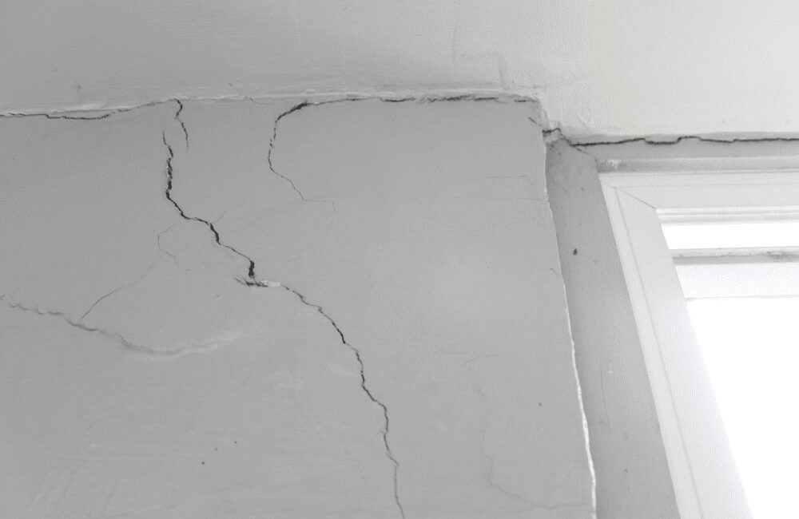
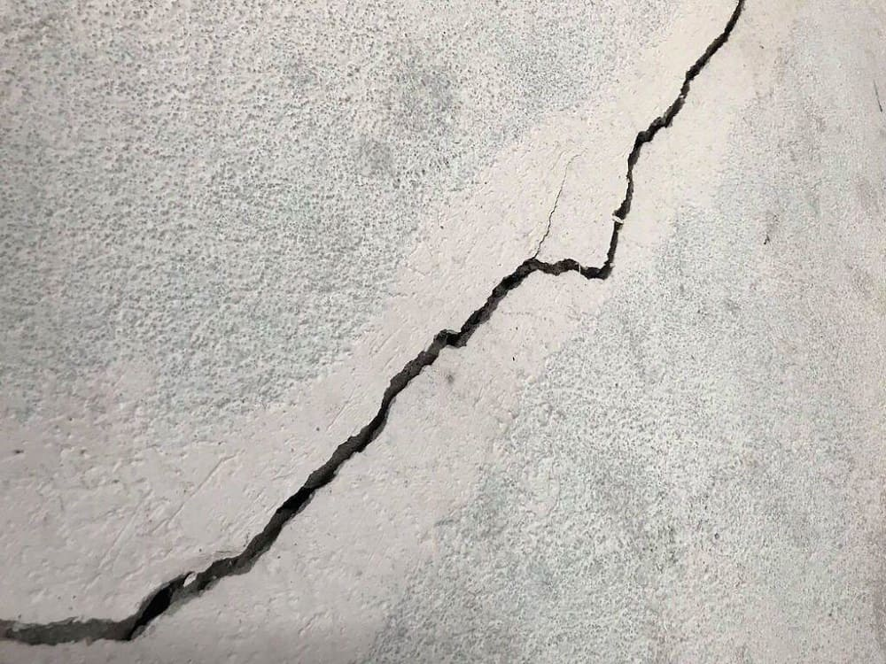
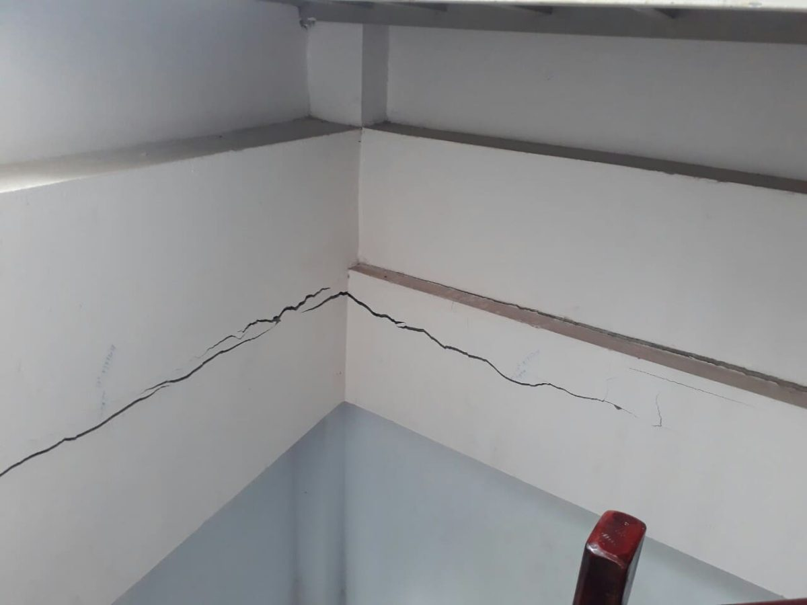
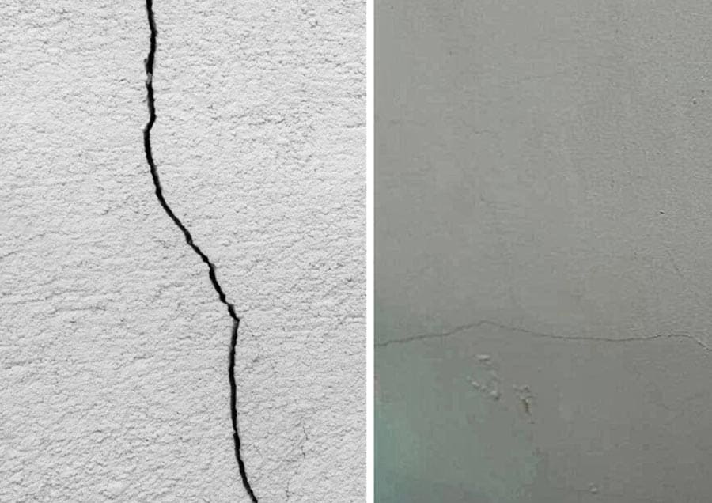

Tường nhà bị nứt dọc là tình trạng khá phổ biến trong nhiều công trình, có thể xuất phát từ nhiều nguyên nhân như kết cấu móng, chất lượng vật liệu hoặc quá trình thi công. Những vết nứt này không chỉ ảnh hưởng đến thẩm mỹ mà còn tiềm ẩn nguy cơ gây mất an toàn nếu không được xử lý kịp thời. Vậy tường nhà bị nứt dọc là do đâu và cách khắc phục như thế nào? Hãy cùng AVA Architects khám phá chi tiết trong bài viết dưới đây.
Xem thêm:
Nguyên nhân khiến tường nhà bị nứt dọc
Tình trạng tường nhà bị nứt dọc thường xuất phát từ nhiều nguyên nhân khác nhau trong quá trình xây dựng và sử dụng công trình, phổ biến gồm:
- Ảnh hưởng từ thời tiết: Sự thay đổi nhiệt độ đột ngột giữa nóng và lạnh khiến vật liệu xây dựng giãn nở – co ngót liên tục, lâu ngày có thể hình thành các vết nứt dọc trên tường.
- Móng nhà không đảm bảo kết cấu: Khi móng công trình không đủ khả năng chịu lực hoặc bị sụt lún, kết cấu tường phía trên dễ bị tác động và xuất hiện các vết nứt theo chiều dọc.
- Thi công và vật liệu kém chất lượng: Những vết nứt nhỏ trên tường có thể do lớp sơn hoặc lớp trát không được thi công đúng kỹ thuật, hoặc sử dụng vật liệu xây dựng không đạt tiêu chuẩn.
- Tác động từ ngoại lực: Việc khoan, đóng đinh, đục tường hoặc rung chấn từ các công trình thi công gần đó cũng có thể gây ảnh hưởng đến kết cấu tường, dẫn đến hiện tượng nứt dọc.

Nguyên nhân tường nhà bị nứt dọc thường do sụt lún móng, co ngót vật liệu hoặc lỗi thi công (C: Internet)
Có nên lo lắng khi tường nhà bị nứt dọc
Không phải mọi trường hợp tường nhà bị nứt dọc đều gây nguy hiểm cho công trình. Tuy nhiên, việc nhận biết đúng dạng vết nứt sẽ giúp bạn xác định khi nào chỉ cần xử lý bề mặt và khi nào cần kiểm tra lại kết cấu ngôi nhà. Dưới đây là những dạng nứt dọc thường gặp, kèm theo nguyên nhân hình thành và mức độ ảnh hưởng của từng loại để bạn dễ dàng đánh giá và có hướng xử lý phù hợp.
Nứt dọc bề mặt, nứt lớp vữa
Đây là dạng tường nhà bị nứt dọc ở mức độ nhẹ và khá phổ biến, thường xuất hiện trên lớp vữa trát hoặc lớp sơn hoàn thiện bên ngoài. Các vết nứt thường rất mảnh, có bề rộng nhỏ khoảng dưới 1mm và chạy dọc theo mạch vữa hoặc phân bố rải rác trên bề mặt tường.

Tường nhà nứt dọc bề mặt là vết nứt nhỏ trên lớp vữa hoặc sơn của tường (C: Internet)
Nguyên nhân chủ yếu của tình trạng này thường liên quan đến sự co ngót của vật liệu khi lớp vữa khô quá nhanh, lỗi kỹ thuật trong quá trình xây trát hoặc việc bảo dưỡng tường sau thi công không đúng cách. Thông thường, loại nứt này không ảnh hưởng đến kết cấu công trình mà chủ yếu làm giảm tính thẩm mỹ của bề mặt tường.
Xem thêm:
Nứt dọc sâu đến lớp gạch
Tình trạng tường nhà bị nứt dọc có thể lan sâu đến lớp gạch bên trong, khiến ranh giới giữa các viên gạch hiện rõ. Các vết nứt thường chạy dọc theo mạch tường với độ rộng khoảng từ 1–2mm hoặc lớn hơn. Nguyên nhân chủ yếu là do mạch vữa kém liên kết, chất lượng gạch không đảm bảo hoặc quá trình thi công thiếu các biện pháp giằng chống cần thiết.

Tường nhà nứt dọc sâu đến lớp gạch là vết nứt ăn sâu qua lớp vữa, làm lộ rõ mạch gạch bên trong (C: Internet)
Mặc dù dạng nứt này chưa gây ảnh hưởng nghiêm trọng đến kết cấu công trình, nhưng nếu để kéo dài mà không xử lý kịp thời, nước mưa và độ ẩm có thể thấm vào bên trong, khiến tường nhanh chóng bị xuống cấp và làm giảm độ bền của công trình.
Nứt dọc tại vị trí tiếp giáp cột và tường
Những khu vực tiếp giáp giữa cột bê tông và tường gạch là vị trí dễ xuất hiện hiện tượng tường nhà bị nứt dọc. Nguyên nhân chủ yếu đến từ sự khác biệt về tính chất vật liệu, khi bê tông và gạch có mức độ co giãn không giống nhau. Khi nhiệt độ môi trường thay đổi, sự giãn nở này tạo ra lực tác động khiến lớp vữa liên kết giữa hai vật liệu bị tách ra, hình thành các vết nứt dọc.

Tường nhà nứt dọc tại vị trí tiếp giáp cột và tường thường do sự co giãn khác nhau giữa bê tông và gạch (C: Internet)
Mức độ ảnh hưởng của vết nứt ở vị trí tiếp giáp phụ thuộc vào độ giãn nở và biến dạng của vật liệu theo thời gian. Tuy không phải lúc nào cũng gây nguy hiểm ngay lập tức, nhưng các vết nứt này có xu hướng lan rộng dần, vì vậy cần được xử lý sớm bằng những vật liệu có độ đàn hồi và khả năng bám dính tốt để hạn chế tình trạng nứt tiếp tục phát triển.
Xem thêm:
- BIM là gì? Lợi ích, lịch sử và ứng dụng BIM trong xây dựng
- Quy định PCCC căn hộ 3 tầng, 4 tầng, 5 tầng, 6 tầng, 7 tầng
- Có nên xây tường gạch 2 lớp chống nóng không?
Nứt dọc chạy suốt chiều cao tường
Đây là dạng tường nhà bị nứt dọc ở mức độ nghiêm trọng khi vết nứt kéo dài liên tục từ chân tường lên đến trần nhà. Hiện tượng này thường cho thấy nền móng công trình đang có dấu hiệu dịch chuyển, sụt lún hoặc tường phải chịu tải trọng quá lớn. Các vết nứt thường có bề rộng khá lớn, ăn sâu vào kết cấu và có xu hướng lan rộng nhanh theo thời gian.

Tường nhà nứt dọc chạy suốt chiều cao tường là vết nứt kéo dài từ chân tường đến trần (C: Internet)
Khi xuất hiện tình trạng vết nứt dọc chạy suốt chiều cao của tường, gia chủ nên nhanh chóng kiểm tra lại kết cấu công trình. Trong nhiều trường hợp, cần áp dụng các giải pháp kỹ thuật chuyên sâu để xử lý và gia cố nhằm đảm bảo độ an toàn và ổn định lâu dài cho ngôi nhà.
Cách xử lý tường nhà bị nứt dọc
Tùy theo mức độ và nguyên nhân của tình trạng tường nhà bị nứt dọc, phương án xử lý sẽ có sự khác nhau. Việc sửa chữa đúng kỹ thuật không chỉ giúp ngăn ngừa thấm nước mà còn tăng độ bền cho tường và hạn chế nguy cơ tái nứt trong tương lai. Dưới đây là một số cách xử lý phổ biến mà bạn có thể tham khảo:
- Xử lý vết nứt dọc trên bề mặt, nứt lớp vữa: Với các vết nứt nhỏ chỉ xuất hiện trên lớp trát, cần cạo bỏ toàn bộ phần vữa bị hư hỏng, làm sạch bề mặt rồi trát lại bằng lớp vữa mới để đảm bảo độ bám dính và thẩm mỹ cho tường.
- Xử lý vết nứt dọc ăn sâu đến lớp gạch: Trong trường hợp vết nứt đã lan đến lớp gạch bên trong, cần vệ sinh sạch khe nứt và sử dụng keo hoặc vật liệu trám chuyên dụng để lấp kín. Sau đó tiến hành trát lại bề mặt tường và phủ thêm 1–2 lớp chống thấm để bảo vệ công trình.
- Xử lý nứt dọc tại vị trí tiếp giáp giữa cột và tường: Các vết nứt tại khu vực này thường do sự giãn nở khác nhau giữa bê tông và gạch, đặc biệt dưới tác động của thời tiết. Khi xử lý, cần kiểm tra khả năng thấm nước của tường, sau đó sử dụng sơn chống thấm hoặc vật liệu đàn hồi để hạn chế nước và nhiệt độ ảnh hưởng đến khu vực này.
- Xử lý vết nứt dọc chạy suốt chiều cao tường: Đối với những vết nứt lớn kéo dài từ chân tường lên trần, có thể gia cố bằng thép chịu lực hoặc sử dụng vữa cường độ cao nhằm phân bổ lại tải trọng cho tường. Tuy nhiên, về lâu dài cần kiểm tra và xử lý lại phần nền móng để đảm bảo sự ổn định của toàn bộ công trình.
Với những trường hợp tường nhà bị nứt dọc nghiêm trọng hoặc kéo dài, gia chủ nên liên hệ các đơn vị chuyên môn để được kiểm tra và tư vấn giải pháp phù hợp, giúp đảm bảo độ an toàn, độ bền và tuổi thọ của công trình.
Giải pháp hạn chế tường nứt dọc khi xây nhà
Dù ở mức độ nhẹ hay nghiêm trọng, các vết nứt trên tường đều gây ảnh hưởng đến tính thẩm mỹ và cảm giác an tâm khi sử dụng nhà ở. Bên cạnh đó, việc sửa chữa tường nhà bị nứt dọc thường khá phức tạp, tốn kém chi phí và đôi khi khó khắc phục triệt để. Vì vậy, phòng tránh nứt tường ngay từ giai đoạn xây dựng luôn là giải pháp hiệu quả và bền vững hơn.
Để hạn chế nguy cơ tường bị nứt, cần chú ý một số yếu tố quan trọng sau:
- Khảo sát địa chất trước khi xây dựng: Nền đất yếu là một trong những nguyên nhân phổ biến dẫn đến nứt tường. Việc khảo sát địa chất giúp xác định đặc điểm của đất nền, từ đó lựa chọn phương án thiết kế và thi công móng phù hợp để đảm bảo độ ổn định cho công trình.
- Thi công đúng kỹ thuật: Tuân thủ quy trình thi công là yếu tố quan trọng giúp hạn chế tình trạng nứt tường. Đặc biệt cần chú ý đến các công đoạn như làm móng đúng tiêu chuẩn, lựa chọn vật liệu chất lượng, xây gạch ngay ngắn, đảm bảo độ liên kết giữa các viên gạch và bảo dưỡng tường đúng cách trong quá trình thi công.
- Sử dụng lưới thép trước khi trát vữa: Việc gia cố bằng lưới thép trước khi trát giúp tăng độ liên kết cho lớp vữa và hạn chế sự co giãn của vật liệu, từ đó giảm nguy cơ xuất hiện các vết nứt trên tường.
- Lựa chọn sơn có độ đàn hồi tốt: Sử dụng các loại sơn có khả năng co giãn và chịu được tác động của thời tiết sẽ giúp bề mặt tường thích nghi tốt hơn với sự thay đổi nhiệt độ, hạn chế nứt vỡ theo thời gian.
- Chọn đơn vị thi công uy tín: Một nhà thầu xây dựng có kinh nghiệm và chuyên môn sẽ đảm bảo công trình được thi công đúng kỹ thuật, từ đó giảm thiểu tối đa nguy cơ tường nhà bị nứt dọc hoặc các sự cố kết cấu khác trong quá trình sử dụng.
Tình trạng tường nhà bị nứt dọc có thể xuất phát từ nhiều nguyên nhân như kết cấu móng, chất lượng vật liệu hay quá trình thi công. Việc phát hiện sớm và có giải pháp xử lý phù hợp sẽ giúp hạn chế hư hỏng lan rộng, đồng thời đảm bảo độ bền và tính an toàn cho công trình. Nếu bạn đang tìm kiếm giải pháp thiết kế và xây dựng tối ưu để hạn chế tình trạng tường nhà bị nứt dọc ngay từ đầu, hãy tham khảo và liên hệ AVA Architects để được tư vấn kiến trúc và kết cấu phù hợp cho ngôi nhà của bạn.
- Market Analyst
- Mỹ Vân là Chuyên viên Phân tích Thị trường, đảm nhận vai trò nghiên cứu và phân tích chuyên sâu các xu hướng của ngành kiến trúc, loại hình dự án và thị trường bất động sản cho AVA Architects. Vân đã và đang hỗ trợ AVA Architects liên tục đổi mới và đưa ra quyết định chiến lược chính xác, đồng thời cung cấp cho khách hàng những góc nhìn giá trị để đưa ra lựa chọn đầu tư hiệu quả nhất. Tất cả đều hướng tới mục tiêu củng cố vị thế tiên phong của AVA và cùng khách hàng kiến tạo nên những giá trị bền vững cho tương lai.
 Blog thiết kế AVA14/09/202699+ Mẫu biệt thự phố đẹp, hiện đại, xu hướng năm 2026
Blog thiết kế AVA14/09/202699+ Mẫu biệt thự phố đẹp, hiện đại, xu hướng năm 2026 Blog thiết kế AVA10/09/2026999+ mẫu biệt thự đẹp đẳng cấp, sang trọng nhất 2026
Blog thiết kế AVA10/09/2026999+ mẫu biệt thự đẹp đẳng cấp, sang trọng nhất 2026 Blog thiết kế AVA09/09/2026Mẫu biệt thự hiện đại sang trọng, hiện đại 2026
Blog thiết kế AVA09/09/2026Mẫu biệt thự hiện đại sang trọng, hiện đại 2026 Blog thi công AVA28/04/2026Lợi ích khi xây nhà trọn gói bạn nhất định phải biết
Blog thi công AVA28/04/2026Lợi ích khi xây nhà trọn gói bạn nhất định phải biết